Making Collection Operations Optimal
with Aggressive JIT Compilation
Aleksandar Prokopec, David Leopoldseder,
Gilles Duboscq, Thomas Wuerthinger
Oracle Labs Switzerland
October 2017

Safe Harbour
The following is intended to provide some insight into a line of research in Oracle Labs. It is intended for information purposes only, and may not be incorporated into any contract.
It is not a commitment to deliver any material, code, or functionality, and should not be relied in making purchasing decisions. Oracle reserves the right to alter its development plans and practices at any time, and the development, release, and timing of any features or functionality described in connection with any Oracle product or service remains at the sole discretion of Oracle.
Any views expressed in this presentation are my own and do not necessarily reflect the views of Oracle.
1. A JIT compiler can make Scala collection operations optimal.
2. For this, a JIT compiler is usually a better choice than a static compiler.
3. Specific optimizations are more easily done by a static compiler.
Optimal
==
Same performance as equivalent hand-written code
with while-loops,
if-statements,
stack-local variables and array operations
High-Level Optimizations in Graal
Case Study: foldLeft
Case Study: map
Performance
High-Level Optimizations in Graal
Inlining
def sq(x: Double) = x * x
def tss(xs: List[Double]): Double =
if (xs.isEmpty) 0
else sq(xs.head) + tss(xs.tail)
def sq(x: Double) = x * x
def tss(xs: List[Double]): Double =
if (xs.isEmpty) 0 else {
val h = xs.head
h * h + tss(xs.tail)
}
Inlining is black art.
How to inline? Simple.
When to inline? Anything but simple.
Polymorphic Inlining
def tss(xs: Seq[Int]): Int =
xs.fold(0)(_ + sq(_))
def tss(xs: Seq[Int]): Int =
xs.fold(0)(_ + sq(_))
|
|-> xs: List[Int] 62%
|
|-> xs: ArrayOps[Int] 34%
|
\-> xs: Vector[Int] 4%
def tss(xs: Seq[Int]): Int =
xs match {
case xs: List[Int] =>
xs.fold(0)(_ + sq(_))
case xs: ArrayOps[Int] =>
xs.fold(0)(_ + sq(_))
case _ =>
xs.fold(0)(_ + sq(_))
}
A JIT compiler has access to receiver type profiles.
Canonicalization
val xs: Seq[Int] = 1 :: 2 :: 3
val s = xs.fold(0)(_ + _)
val p = s * s
s * s + 2 * p
Simplify until convergence.
val xs: Seq[Int] = 1 :: 2 :: 3
val s = xs.fold(0)(_ + _)
val p = s * s
p + 2 * p
Global value numbering.
val xs: Seq[Int] = 1 :: 2 :: 3
val s = xs.fold(0)(_ + _)
val p = s * s
p + (p << 1)
Strength reduction.
val xs: Seq[Int] = 1 :: 2 :: 3
val s = (xs: List[Int]).fold(0)(_ + _)
val p = s * s
p + (p << 1)
Monomorphic invokes.
Canonicalization - many different simplification rules, triggered by localized patterns in the IR.
Usually monotonic, and converging.
Partial Escape Analysis
def tss(a: Array[Int]): Int = {
val it = new ArrayIterator
it.current = 0
it.array = a
var sum = 0
while (it.current < it.array.length) {
sum += sq(it.array(it.current))
it.current += 1
}
sum
}
def tss(a: Array[Int]): Int = {
var current = 0
var sum = 0
while (current < a.length) {
sum += sq(a(current))
current += 1
}
sum
}
See:
Partial Escape Analysis and Scalar Replacement for Java
Other optimizations
Path Duplication, Loop Peeling, Conditional Elimination, ...
Case Study: foldLeft
def foldLeft[B](z: B)(op: (B, A) => B): B =
foldl(0, length, z, op)
@tailrec
def foldl[B](
s: Int, e: Int, z: B, op: (B, A) => B
): B =
if (s == e) z
else foldl(s + 1, e, op(z, this(s)), op)
def foldLeft[B](z: B)(op: (B, A) => B): B =
foldl(0, length, z, op)
@tailrec
def foldl[B](
s: Int, e: Int, z: B, op: (B, A) => B
): B =
if (s == e) z
else foldl(s + 1, e, op(z, this(s)), op)
def foldLeft[B](z: B)(op: (B, A) => B): B =
foldl(0, length, z, op)
def computeSum(xs: Array[Int]): Long =
xs.foldLeft(0L)(_ + _)
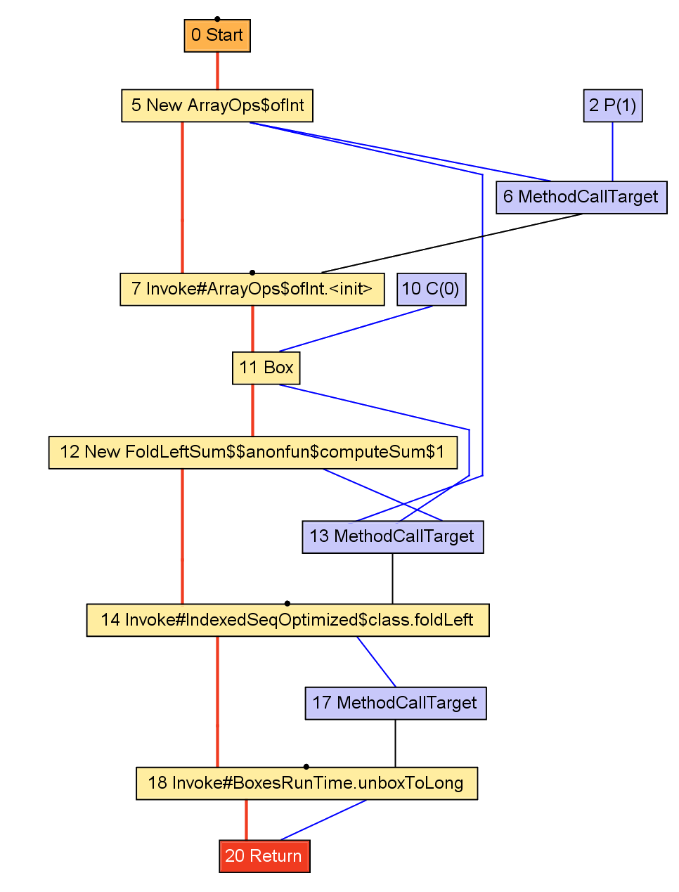
def computeSum(xs: Array[Int]): Long =
xs.foldLeft(0L)(_ + _)
def computeSum(xs: Array[Int]): Long = {
val ops = new ArrayOps(xs)
val z = BoxesRuntime.boxToLong(0L)
val op = new $$anonfun$computeSum$1
val res = ops.foldLeft(0L)(op)
BoxesRuntime.unboxToLong(res)
}
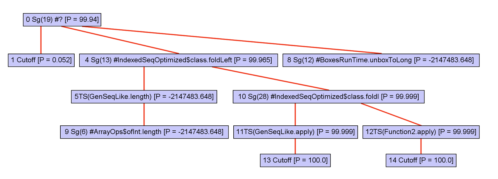
To optimize, callees must be inlined. First, a call graph is created.
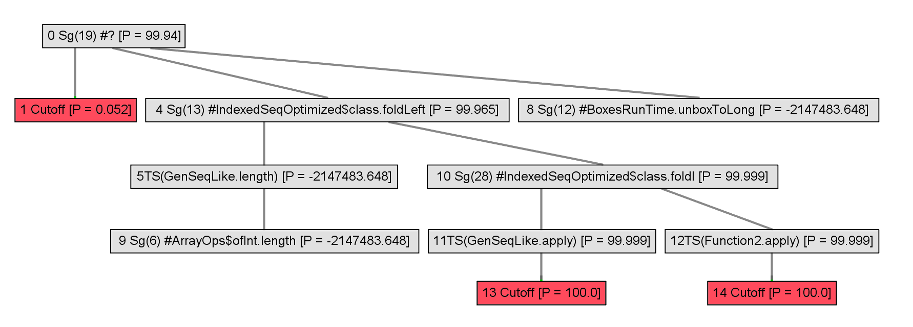
The call graph is expanded incrementally.
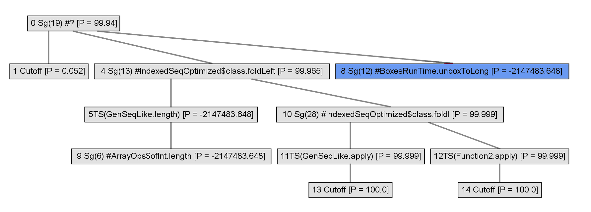
A heuristic is used to inline some of the nodes.
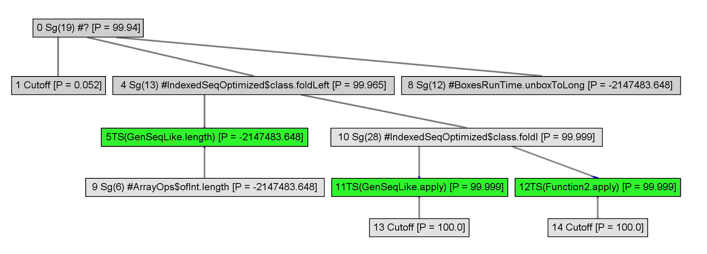
Polymorphics callsites are represented with typeswitches.
@tailrec def foldl[B](
s: Int, e: Int, z: B, op: (B, A) => B): B =
if (s == e) z
else foldl(s + 1, e, op(z, apply(s)), op)
def foldLeft[B](z: B)(op: (B, A) => B): B =
foldl(0, length, z, op)
def computeSum(xs: Array[Int]): Long = {
val z = BoxesRuntime.boxToLong(0L)
val res = new ArrayOps(xs).foldLeft(0L)(_ + _)
BoxesRuntime.unboxToLong(res)
}
Polymorphics callsites are represented with typeswitches.
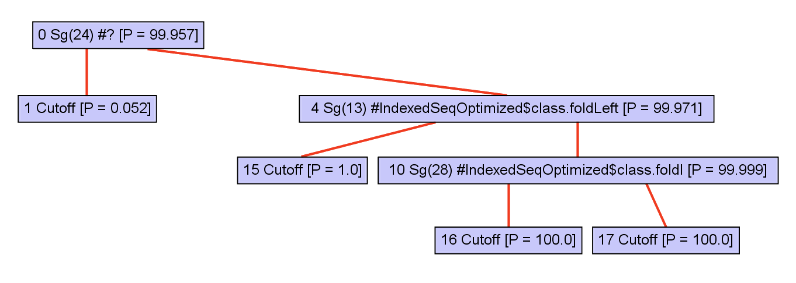
Receiver type information improves, so polymorphic callsites are removed.
@tailrec def foldl[B](
s: Int, e: Int, z: B, op: (B, A) => B): B =
if (s == e) z
else foldl(s + 1, e, op(z, apply(s)), op)
def foldLeft[B](z: B)(op: (B, A) => B): B =
foldl(0, length, z, op)
def computeSum(xs: Array[Int]): Long = {
val z = BoxesRuntime.boxToLong(0L)
val res = new ArrayOps(xs).foldLeft(0L)(_ + _)
res.value
}
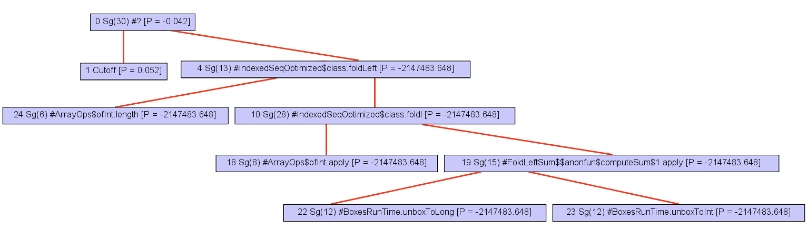
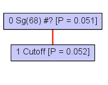
The expanded part of the call graph can be completely inlined.
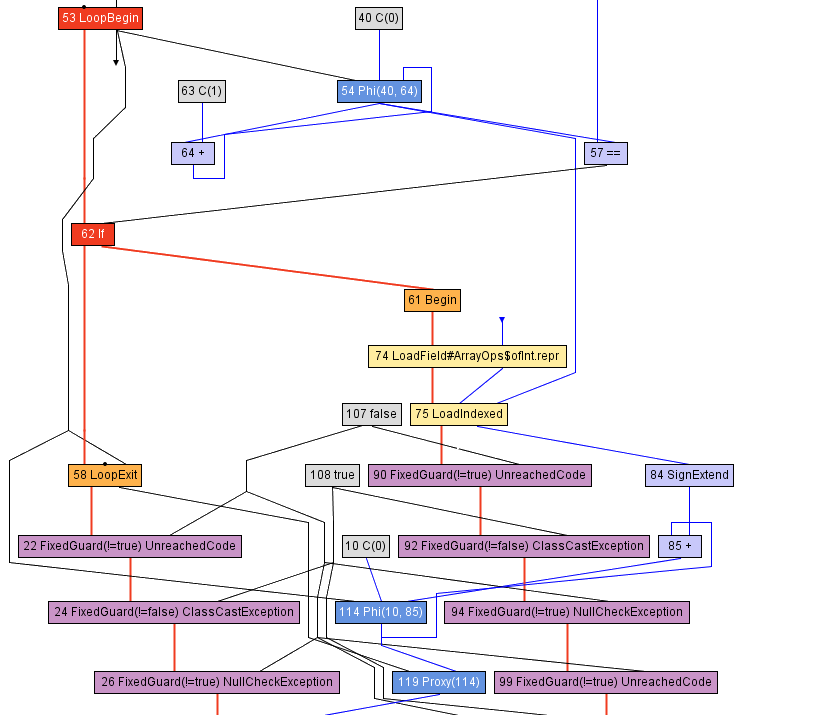
def computeSum(xs: Array[Int]): Long = {
val ops = new ArrayOps(xs)
var z = 0L
var s = 0; val e = ops.array.length
while (s < e) {
if (s < 0 || s >= ops.array.length)
throw new ArrayIndexOutOfBoundsException
z = z + ops.array(s)
s += 1
}
val res = new java.lang.Long(e)
res.value
}
def computeSum(xs: Array[Int]): Long = {
val ops = new ArrayOps(xs)
var z = 0L
var s = 0; val e = ops.array.length
while (s < e) {
z = z + ops.array(s)
s += 1
}
val res = new java.lang.Long(e)
res.value
}
def computeSum(xs: Array[Int]): Long = {
var z = 0L
var s = 0; val e = xs.length
while (s < e) {
z = z + xs(s)
s += 1
}
e
}
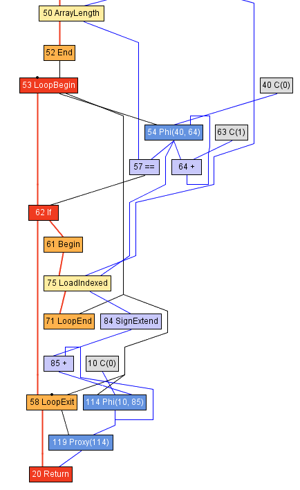
Polymorphic foldLeft
def computeSum(xs: Seq[Int]): Long = {
xs match {
case xs: Array[Length] =>
var z = 0L
var s = 0
val e = xs.length
while (s < e) {
z = z + xs(s)
s += 1
}
e
}
}
Case study: map
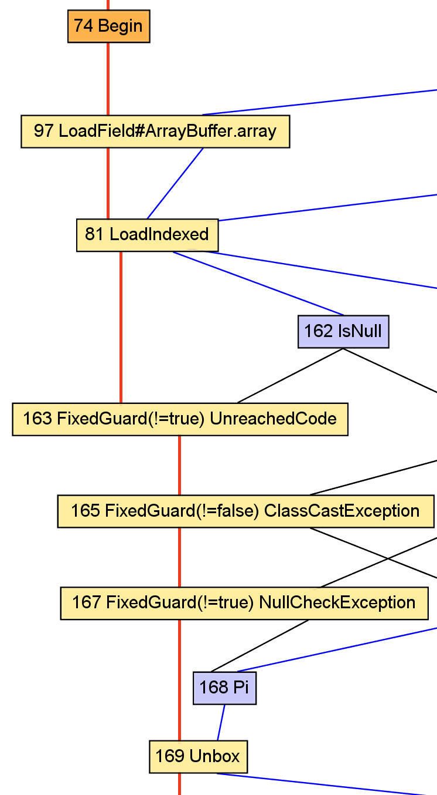
val x: A = apply(i).asInstanceOf[A]
val y: B = f(x)
val x: AnyRef = array(i)
val y: Int = x.value + 1
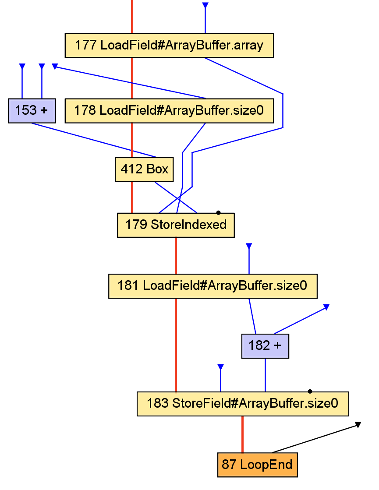
val y: B = f(x)
result += y
val y: Int = x.value + 1
outArray(i) = new java.lang.Integer(y)
Conclusion:
Optimizing the data structures
would require whole-program analysis,
and is best left to the static compiler.
Performance
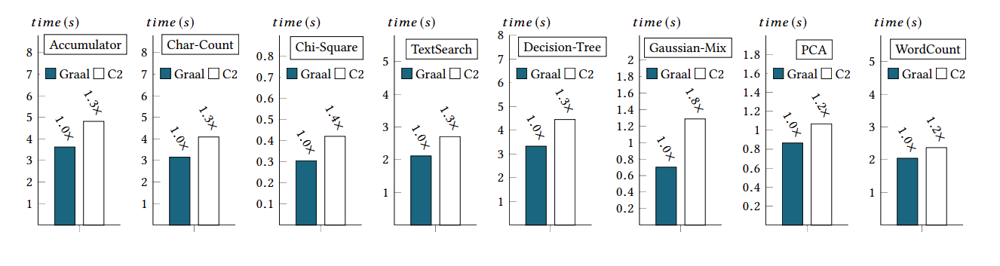